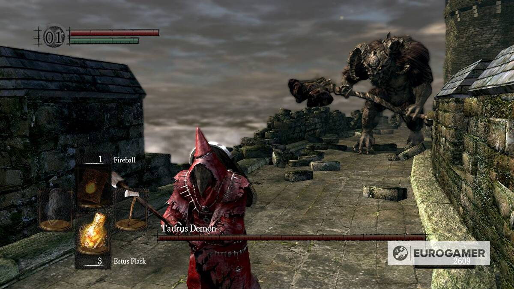

Bu kısımda sizlere son yıllarda oynama şansı elde edip beğendiğim oyunları listeleyip bilgi vermek istiyorum.
-
Death Stranding

Death Stranding son zamanlarda oynadığım şarkıları ve manzaralarıyla büyülendiğim,hikayesiyle ve ilginç oynayış tarzıyla beni kendisine bağlayan bir oyun oldu. Oyun Dünyada yaşamın son bulmasından yıllar sonra olarak Amerika’da geçiyor. İnsanların yer altında dünyadan izole bir yaşam kurarak hayatları sürdürürken, koloniler arasında malzeme taşımak oldukça zor bir iştir. Oyunun ana karakteri Sam Porter Bridges koloniler arasında iletişim ve malzeme gibi ihtiyaçlar için kuryelik görevi yapmaktadır.Oyun senaryosunda dünya dışından gelen yırtıcı yaratıklar dan dolayı koloni dışında yaşam oldukça zorlaşmıştır. Sam ise koloniler arasında iletişim kurmak için kullanılan network ağını taşırken aynı zamanda malzemeleri de koloniden koloniye taşıyor. Tabi ki bu taşıma kolay olmuyor kimi zaman dağlardan kimi zaman nehirlerden geçerken yaratıklarla savaşıyor. Sam üstünde taşıdığı malzemeler ise oyunda ki hızını etkiliyor. Oyunda köprüler, çelik halatlar ve merdiven gibi seçenekler kargoları güvenli bir şekilde taşımak için alternatiflerde bulunuyor.Oyunda genel olarak insanlığın hayatta kalması için gerekli malzemeleri ve iletişimi kolonilere taşımak ve yaratıklarla savaşmak olarak geçiyor. -
Dark Souls Remastered

Dark Souls Remastered, yaklaşık 70 saatimi harcadığım,oynarken saç baş yolduğum hatta neredeyse dişimi kırdığım ve aynı zamanda en sevdiğim oyunlardan bir tanesi olup bir Soulsbore video oyun türüdür.Oyunun Lore'si çok derin olup oyudaki konumumuzu kısaca kısaca özetlemek gerekirse seçilmiş bir ölümsüz olup, asırlardır yanan ateşin sönmemesini sağlayıp bu yolda çıkacak zorlukları aşma mücadelesi verdiğimiz bir evrende vakit geçiriyoruz diyebiliriz. -
The Witcher 3

The Witcher 3, son zamanlarda oynarken kendimi kaptırıp evreninde kaybolduğum oyunlardan bir tanesi diyebilirim. ılış sahnesi, Yennefer'ın büyük bir savaşın ortasında, bilinmeyen bir tehlikeden kaçışıyla başlıyor ve birkaç gün sonrasında Geralt ve Vesemir'in, Yennefer'ın bıraktığı izleri takip ettiğini görüyoruz. Sahnenin sonunda asıl maceramız, Mavi Dağlar'da Witcher'ların kalesi olan Kaer Morhen'deki bir odada başlıyor. Opsiyonel olarak temel hareketleri ve dövüş mekaniklerini öğrendiğimiz kısa bir öğreticiden sonra Vahşi Av'ın ani ve korkutucu gelişini görüyoruz. Hemen sonrasındaysa bu gördüklerimizin Geralt'ın rüyası olduğunu öğreniyoruz. Geralt, rüyasını Vesemir ile konuşmak için uyanıyor ve birlikte Yennefer'ın izlerini takip etmeye devam ediyorlar.Böylece serüven başlıyor.